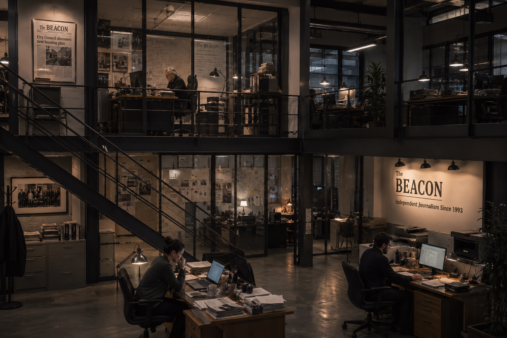
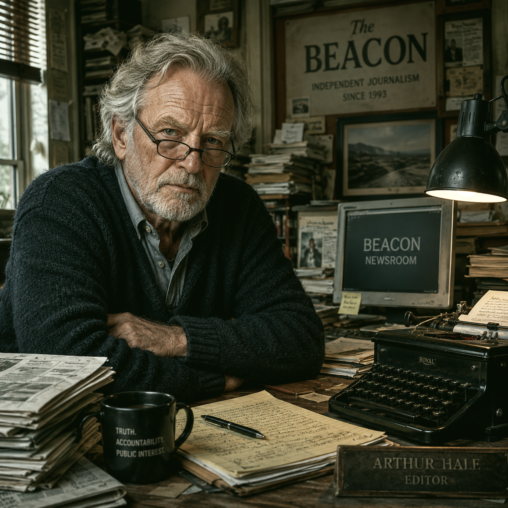

About Us
The Beacon
Founded in 1993 by Arthur Hale, The Beacon is a small reader-supported newsroom focused on public accountability, local reporting and long-form investigations.
The Beacon is not a major paper. It has no corporate owner, no political backer and no comfortable budget.
Its newsroom survives through subscriptions, donations and a small group of people who still believe that local journalism should ask uncomfortable questions.
Editorial Team
Arthur Hale — Editor-in-Chief
Margaret Dunn — Managing Editor
Thomas Rivera — Photojournalist
Giulia Verra — Freelance Investigative Reporter

The Beacon newsroom. Photo archive.

Arthur Hale, founder and editor-in-chief.